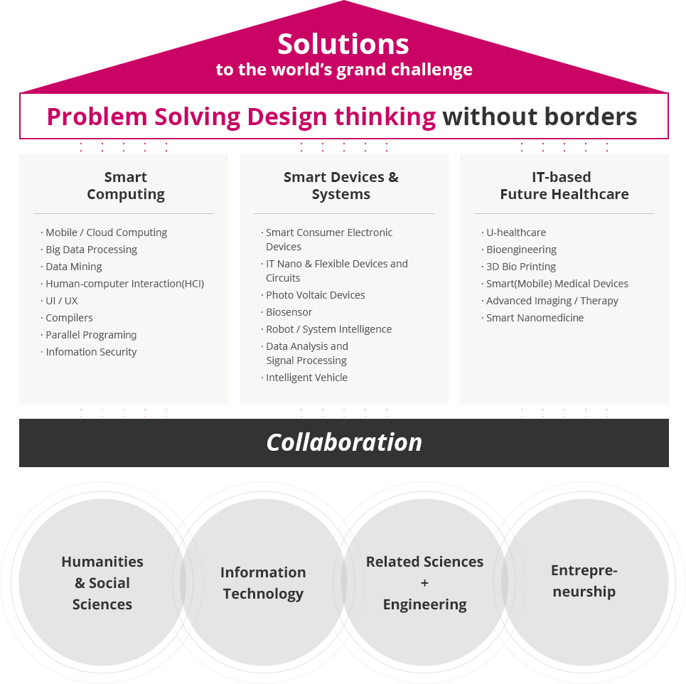

@@include('sub_visual.html',{
"title" : "연구분야",
"type" : "type4",
"sub_menu" : "연구"
})
연구목표
-
i-Lab 고유의 융합 원천기술 확보를 통해 World Top-tier Institute로 도약, “World's grand challenges”에 대한 Solution
제공
- 다학제적인 협력과 융합을 중시하는 연구이며 미래변화를 선도할 수 있는 창의적 기술 개발에 역점을 두었음.

Solutions to the world's grand challenge
problem solving design thinking without borders
- start computing
- Mobile / Cloud Computing
- Big Data Processing
- Data Mining
- Human-computer Interaction(HCI)
- UI / UX
- Compilers
- Parallel Programing
- Infomation Security
- smart devices & systems
- Smart Consumer Electronic Devices
- IT Nano & Flexible Devices and Circuits
- Photo Voltaic Devices
- Biosensor
- Robot / System Intelligence
- Data Analysis and Signal Processing
- Intelligent Vehicle
- it-based future headthcare
- U-healthcare
- Bioengineering
- 3D Bio Printing
- Smart(Mobile) Medical Devices
- Advanced Imaging / Therapy
- Smart Nanomedicine
collaboration
- Humanities & Social Sciences
- Information Technology
- Related Sciences + Engineering
- Entrepreneurship